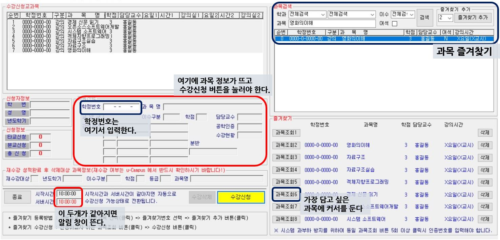

1. 수강신청 프로그램을 켠다.
.
2. 즐겨찾기에 본인이 담고 싶은 과목 및 예비 과목들을 담아 둔다.
당일 00:00부터 가능하다. ‘과목검색’에서 과목을 검색하고 원하는 즐겨찾기 번호에 입력한다.
6,7 번이 가장 수강신청 버튼과 가깝기 때문에, 주로 가장 담고 싶은 과목을 위치시킨다.
.
3. ‘시작시간’과 ‘서버시간’이 같아지기를 기다린다.
수강신청 프로그램 상 ‘시작시간’과 ‘서버시간’이 같아져야 “수강 신청 시작되었습니다” 문구가 뜨고 시작할 수 있다.
타 서버시간 사이트를 확인할 필요 없이, 수강신청 5분 전 프로그램을 껐다 켜서 서버시간을 맞추는 것을 추천한다.
.
4. 커서는 가장 원하는 과목의 ‘과목조회’ 버튼에 갖다 둔다.
가장 잡고 싶은 과목에 커서를 올리고 한번 클릭해 두면, “수강신청이 시작되었습니다” 창이 떴을 때
'알림 창 지우기' '과목조회' 를 엔터를 두번 누름으로써 훨씬 더 빠르게 진행할 수 있다.
그러나 수강신청에 익숙치 않은 경우 컨트롤에 실패하는 경우가 많고, 개인적으로 추천하지 않는다.
.
5. ‘수강신청이 시작되었습니다’ 알림이 뜨면 알림 창을 지운다.
이때 엔터를 치면 더 빠르게 지울 수 있다.
.
6. 해당 과목을 조회하고, 과목 선택 창에 과목정보가 뜨면 ‘수강신청’ 버튼을 누른다.
이 텀이 0.5초에서 1초 정도 되는데, 이를 기다리지 않고 수강신청 버튼을 계속 누르면 안된다.
렉이 걸려서 수강신청에 실패할 확률이 굉장히 높아진다. 과목 정보가 떴는지 꼭 확인하자.
.
7. 이 과정을 수강신청이 끝날 때까지 반복한다.
‘수강신청 교과목’에 본인이 담고자 했던 과목이 모두 담기면 성공한 것이다.
이 과목들은 바로 klas 시간표에 업데이트 된다.
